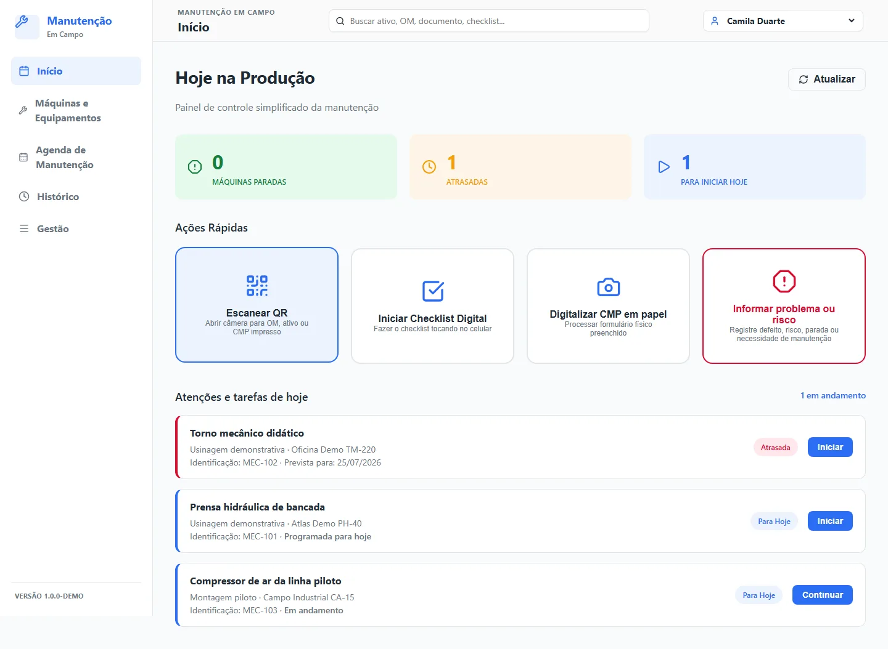
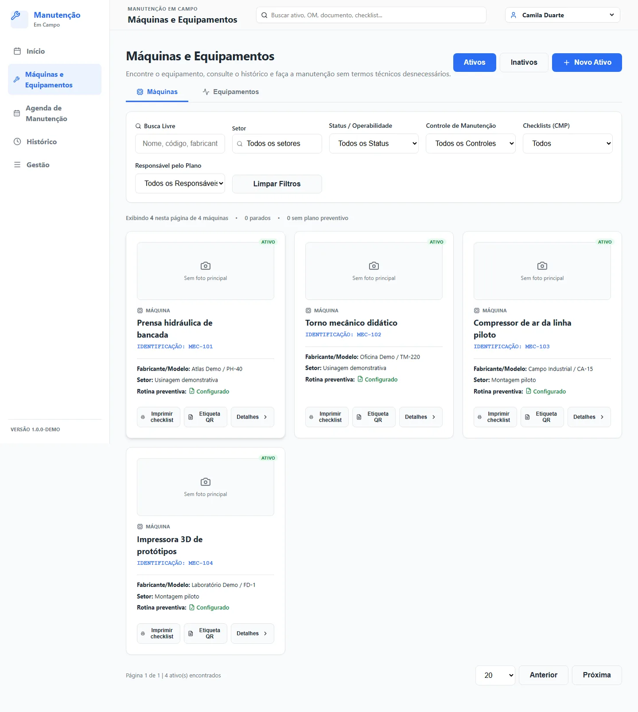
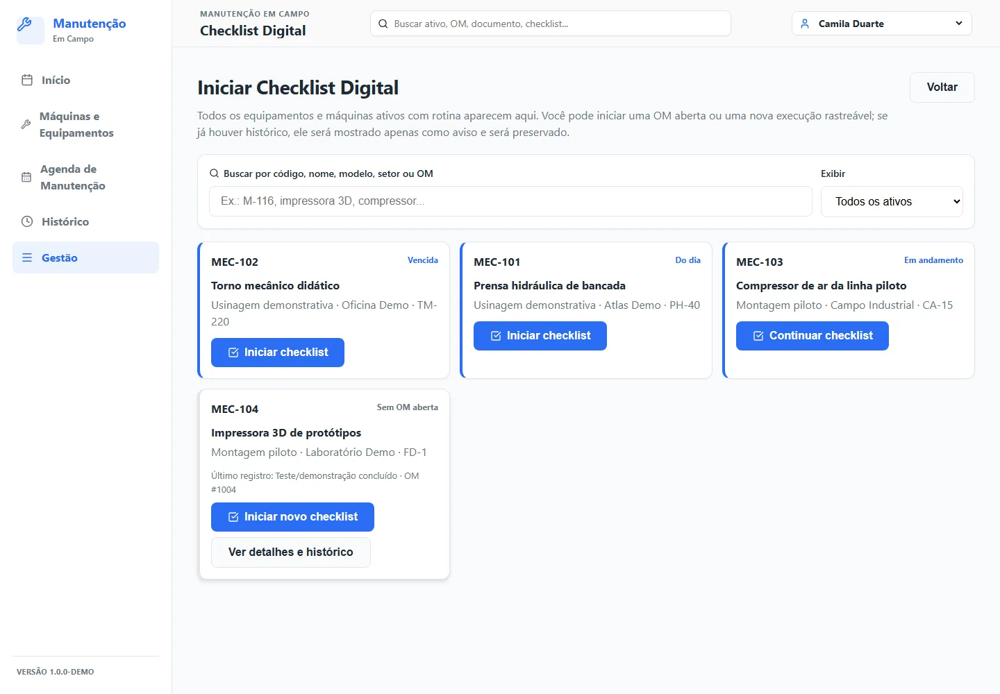
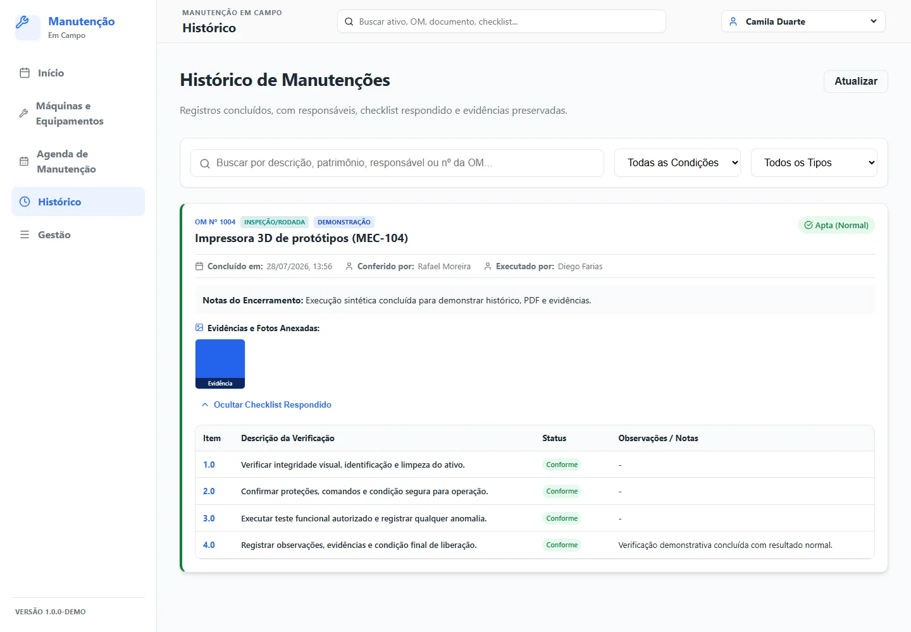

Contexto e problema
Registrar execução em campo sem perder histórico e sem transformar o checklist em burocracia.
CASE / MANUTENCAO-CAMPO
LABORATÓRIOLaboratório público funcional
Laboratório derivado de padrões observados em manutenção privada, com checklists, evidências, PDF, QR Code e trilha auditável.

PROVAS VISUAIS



O que esta galeria mostra
A seleção prioriza telas reais, cópias sanitizadas ou fluxos técnicos declarados, sempre com o contexto indicado na legenda.
Limite público
Dados operacionais, credenciais, integrações privadas e informações de clientes não fazem parte desta publicação.
Registrar execução em campo sem perder histórico e sem transformar o checklist em burocracia.
Modelagem, frontend, backend, PWA, relatórios, testes e dados sintéticos.
React/TypeScript, FastAPI, SQLAlchemy assíncrono, SQLite, PWA, hashes e geração de dossiê.
O que este case não mostra
Não representa sistema empresarial, certificação normativa ou autenticação de produção.
Se a operação crescesse
A evolução depende do estado e das limitações descritas neste case; não é apresentada como funcionalidade já entregue.
A evidência pública não contém credenciais, dados pessoais ou informações internas sensíveis.